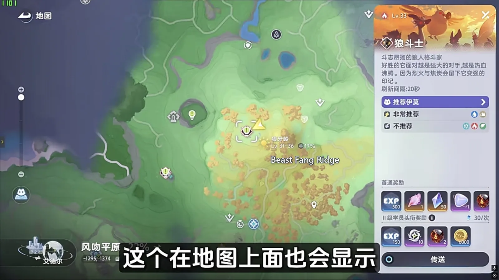
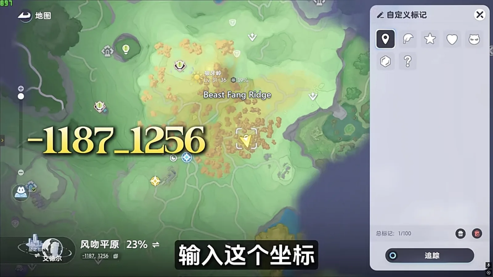
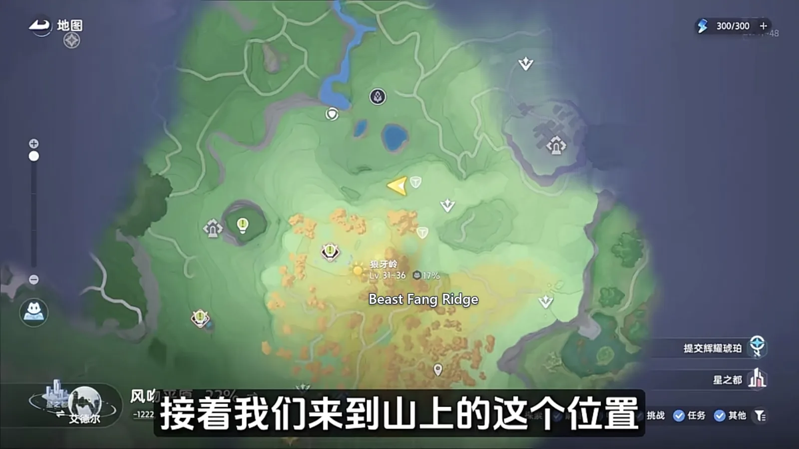
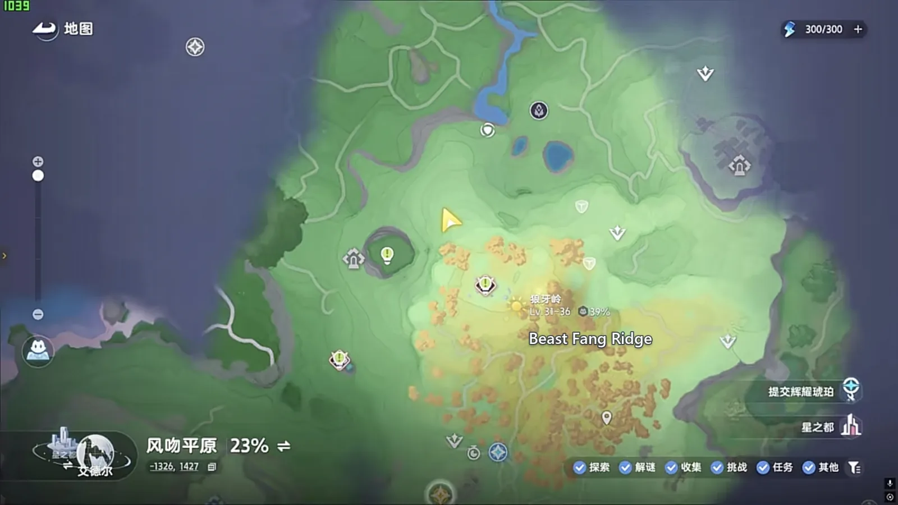

Home首页 / Guides攻略 / Beast Fang Ridge: Every Spawn Point, Walked in One Lap《全地图、全形态伊莫收集》：狼牙岭
Checked核对于 October 16, 20262026 年 10 月 16 日
Beast Fang Ridge: Every Spawn Point, Walked in One Lap《全地图、全形态伊莫收集》：狼牙岭
One lap of Beast Fang Ridge: a pair underfoot at the waypoint, a few in the ruins and the hills, and the rest behind a leaf pile, a night quest, a thunderstorm or a Prismana unlock.狼牙岭一趟走完：落地就是小炭犬和焚火狼，废墟和山里还有几只，剩下的分别卡在枯叶堆、夜晚、雷雨天和虹光天气上。
The Aniimo of Beast Fang Ridge are crowded onto one line. Rather than bumping into them one at a time, walk the line: land at the waypoint, climb the path to the cliff at the top, turn back toward the Alpha's ground, and finish by dropping into the deep pit. There is something standing at every stop on the way. This is that walk, in the order you take it.狼牙岭的伊莫扎堆在一条线路上。与其东一只西一只地碰，不如照着一条顺序走下来：从传送点落地，顺着山路爬到山顶悬崖，再折向 Alpha 那片地方，最后跳进那个深坑。沿途每到一处，都正好有该抓的东西。下面按走的先后，把每一段说清楚。

Down at the waypoint: the pair that is always underfoot落地先扫传送点周围这几只
Land at the Beast Fang Ridge waypoint and Emberpup (Fire · DPS) and Flameruff (Fire · DPS) are already around you. These two are the commonest pair on the whole ridge — a few steps in any direction and there is another one.先传送到狼牙岭传送点，一落地，附近就能看到小炭犬（Emberpup，火 · 输出）和焚火狼（Flameruff，火 · 输出）。这两只是狼牙岭最常见的一对，走几步就有一只。
Turn the camera to the ruins behind you and there are numbers of Iris (Grass · DPS) in its Mountain Woods Form. Head into the hills instead and the first thing you meet is a crowd of Pomegg (Grass · Break) in its Highland Form, with Flutternym (Wind · Heal) in its Mountain Woods Form mixed in among them.把视角转到背后的废墟，那里有很多飘飘花（Iris，草 · 输出）的山林形态。要是你选择往山里面走，第一时间碰到的是一堆拉拉蛋（Pomegg，草 · 击破）的高地形态，和荧粉蝶（Flutternym，风 · 治疗）的山林形态。
Once that stretch is caught, keep climbing the path and the Alpha of Beast Fang Ridge turns up — Scorchhowl (Fire · DPS), and it is marked on the map as well, so you can see it before you get there. Hug the wall on your right and go out through the pass.抓完这一段，沿着山路一直往上走，就能看到狼牙岭的 Alpha —— 狼斗士（Scorchhowl，火 · 输出），它在地图上也会显示出来。贴着右边墙壁走，穿过这道山口。

A leaf pile hides Gracewing, and a wolf you cannot catch in the wild枯叶堆里的幻翼蝶，和野外抓不到的那只狼
Follow the route on and the next one is Gracewing (Wind · Heal) in its Mountain Woods Form. There is a pile of dead leaves here: if your main story has not finished 流光叠谷 yet, open the pile with a Fire or an impact skill and a Mountain Woods Form Gracewing comes out of it. If you cannot find it, open the map and enter the coordinate -1187_1256. Once the main story is done there is no leaf pile here any more, so go straight to the coordinate.跟着路线走，接下来抓幻翼蝶（Gracewing，风 · 治疗）的山林形态。这里有一个枯叶堆，如果你的主线还没有把流光叠谷做完，用火系或者冲击技能打开树叶堆，里面就会冒出一只山林形态的幻翼蝶。找不到的话，打开地图输入坐标 -1187_1256 就行。主线做完的人这里的枯叶堆就没有了，直接按坐标找点。

Then set the clock to night. There are a few Emberpup talking to each other beside you — Twine with one of those, or with a Flameruff, and the Warrior side quest starts. Follow the quest's prompts across three days and it unlocks Inferlupa (Fire · Dark · Break): the other branch the Flameruff line forks into, and one you cannot catch in the wild at all. It looks the part.接着把时间切到晚上，旁边有几只正在聊天的小炭犬，和小炭犬或者焚火狼联结，就能接到斗士任务（Warrior）。跟着任务引导连着做三天，就能解锁焚火狼那一系分出去的另一支 —— 狱魂狼（Inferlupa，火 · 暗 · 击破），野外抓不到，外观相当帅。
The one the thunderstorm brings, and the ice in the cave雷雨天才有的一只，和山洞里的冰系
Up on the ridge at this spot there are numbers of Chirpi (Wind · Support) along the cliff edge, with a few rocks stacked beside them. Wait for thunderstorm weather and the Thunderstorm Form of Scorchhowl (Fire · Electric) spawns here — it has to be a thunderstorm. Plain rain will not do it.来到山上这个位置，悬崖边上有很多口哨鸥（Chirpi，风 · 辅助），旁边还堆着几块石头。等到雷雨天气，这里会刷新狼斗士（Scorchhowl，火 · 电）的雷雨形态 —— 必须是雷雨天，单纯的下雨碰不到。

Jump off the cliff on this side and you land inside a cave, where numbers of Bonesky (Ice · DPS) and Fenrier (Ice · DPS) spawn. Clear it out and head for the way out — there are several Budclaw (Rock · Grass · Break) at the cave mouth.从悬崖这边跳下去，落到山洞里，会刷新不少冰骨崽（Bonesky，冰 · 输出）和冰刃狼（Fenrier，冰 · 输出）。清完往外走，洞口这里能看到好几只花芽蟹（Budclaw，土 · 草 · 击破）。
Fifteen Sparki in a row, and then Flamerion turns up捉满十五只，幻焰灵才会现身
Move on: teleport back to the Scorchhowl Alpha and follow the route to this spot. Set the clock to night and the slope is full of Sparki (Fire · Regen). Catch fifteen of them in a row and a Flamerion (Fire · Regen) appears nearby.转场，传送到狼斗士 Alpha 附近，跟着路线走到这个位置，把时间切到晚上，山坡上全是幽幽焰（Sparki，火 · 回能）。连着捉满 15 只幽幽焰，附近就会冒出一只幻焰灵（Flamerion，火 · 回能）。

Turn the camera round from there and there is a large tree ahead of you. Underneath it is where the Prismana Form of Scorchhowl spawns — with Prismana weather or a nature nurture running, or it will not come out at all.抓完转过视角往前面看，有一棵很大的树，树底下就是狼斗士虹光形态的刷新点 —— 前提是虹光天气或者自然生态开着，不然不会出来。
The last pit: melt the ice and Glynsera is behind it最后那个深坑：融开冰，才见霜锋狼
Turn left from here and there is a second pit. Jump down into it and there is a large block of ice. Melt it with a Fire skill, walk on in, and Glynsera (Ice · DPS) is there.再转过来往左边走，这里还有一个深坑，跳下去是一大片大冰块。用火系技能把这些冰块都融掉，再往里走，就是霜锋狼（Glynsera，冰 · 输出）了。
Get this far and every form Beast Fang Ridge has to give you is caught.走到这里，狼牙岭的伊莫全形态就抓齐了。
The order to walk it in走一遍的顺序
On this ridge the order is worth more than anything else. Land and clear the few around the waypoint; work up the path for the leaf pile and the two wolves that come out at night; climb to the cliff and wait out the thunderstorm, then drop into the cave for the ice; come back to the Alpha's ground at night and take fifteen Sparki; and finish with the pit. Weather and the clock are the two switches on this map — the thunderstorm Scorchhowl, the night Sparki and Scorchhowl's Prismana Form are all pinned to them, and with the wrong conditions the Aniimo will not spawn however long you stand there.狼牙岭这一趟，顺序比什么都值钱：先落地扫掉传送点周围那几只，再顺着山路往上收枯叶堆和夜里那两只狼，接着上悬崖等雷雨、跳洞抓冰系，然后回 Alpha 那片地方夜里捉满幽幽焰，最后解决那个深坑。天气和时间是这张图上最该盯的两样开关，雷雨天的狼斗士、夜里的幽幽焰和狼斗士的虹光形态，都卡在这两个条件上，条件不对，人站在原地也不会刷。
More guides相关攻略
- Nimbus Fields: Every Spawn Point, Walked in One Lap《全地图、全形态伊莫收集》：云上草原 — One lap of Nimbus Fields: six Aniimo fall at the waypoint, and the rest want a time of day, rain, or a Prismana unlock before they show up at all.云上草原一趟跑完：落地脚边就凑着六个图件，剩下的分别要切夜晚、要等下雨、要解锁虹光天气，一路往前不用回头。
- The Argent Strait: Every Spawn Point, Walked in One Lap《全地图、全形态伊莫收集》：鸥鸣湾 — One lap of The Argent Strait: the region's Aniimo sit on a single line, Cornet only drops once every shell is open, and the weather and an unlock each gate one more.鸥鸣湾一趟跑完：这片图的伊莫基本挤在一条线上，贝壳全开小号鸥才下来，天气和解锁各管着哪几只。